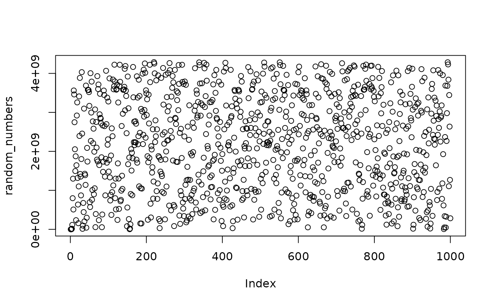

mwc.RdThe multiply-with-carry (MWC) method is a method invented by George Marsaglia for generating sequences of random integers based on an initial set of from two to many thousands of randomly chosen seed values. The main advantages of the MWC method are that it invokes simple computer integer arithmetic and leads to very fast generation of sequences of random numbers with immense periods, ranging from around \(2^{60}\) to \(2^{20000000}\).
mwc(seed, n, b = 4294967296, a = 7L, c = 4L)A MWC generator is a special form of a Lehmer Random Number Generator (see lcg_parkmiller) \(x_n=bx_{n-1} \mod p\) which allows efficient implementation of a prime modulus \(p\) much larger than the machine word size.
Normal Lehmer generator implementations choose a modulsus close to the machine word size. A MWC generator instead maintains its state it base \(b\), so multiplying by \(b\) is done implicitly by shifting one word. The base \(b\) is typically chosen to equal the computer's word size, as this makes the arithmetic modulo \(b\) trivial. This may vary from \(b=2^8\) for a microcontroller to \(b=2^{64}\).
The initial seed values are arbitrary,except that they must not all e zero, nor at the maximum permitted values (\(x_0 =b-1 \text{ and } c_0 = a-1\)).
The mwc() function implements creates a lag-1 MWC with the seed values. That is:
\(x_n = (ax_{n-1} + c_{n-1}) \mod b, c = \lfloor{\frac{ax_{n-1}+c_{n-1}}{b}} \rfloor\)
For more information, see the Wikipedia page.
random_numbers <- mwc(6793,1000)
# Plot numbers to see that they are random
plot(random_numbers)
